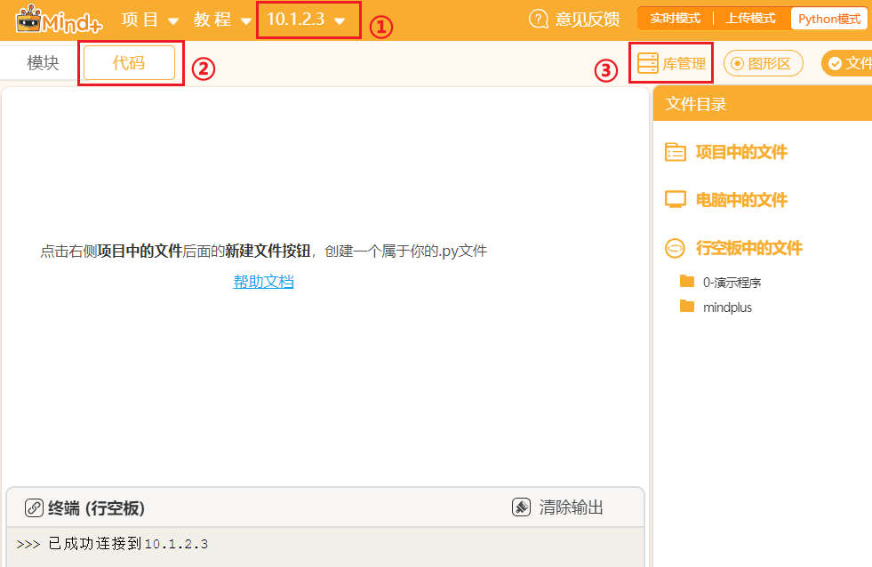

开源硬件行空板
1.简介
行空板是一款拥有自主知识产权的国产教学用开源硬件，采用微型计算机架构，集成LCD彩屏、WiFi蓝牙、多种常用传感器和丰富的拓展接口。同时，其自带Linux操作系统和python环境，还预装了常用的python库，让广大师生只需两步就能开始python教学。
2.简单使用教程
1.选择合适的编程方式
行空板自身作为一个单板计算机可以直接运行Python代码，同时默认开启了ssh服务及samba文件共享服务，因此可以用任意的文本编辑器编写代码，然后将代码传输到行空板即可运行。
2.行空板Python库安装
打开MInd+，连接行空板，切换到代码标签页，点击库管理，此时库管理页面左上角显示行空板logo，说明此处显示的是行空板的库管理。
如果你需要卸载库或者更新库则可以在库列表中进行操作。
如果推荐库中没有你需要的，则可以切换到PIP模式，在输入框中输入库名字安装，右上角可以切换不同的源，例如此处安装dominate则可以输入
dominate或者完整指令pip install dominate，或者指定版本安装pip install dominate==2.5.1,提示**”Successfully installed xxxx”**即表示安装成功。
例如可以在行空板安装我们的模型部署库BaseDeploy，Mind+中甚至可以添加BaseDeploy积木套件，更多说明详见Mind+中的BaseDeploy积木块。

3.部署模型到行空板
参考资料1-AI猜拳机器人：https://mc.dfrobot.com.cn/thread-315543-1-1.html
参考资料2-智能音箱：https://xedu.readthedocs.io/zh/master/how_to_use/support_resources/works/p4-smartspeaker.html
参考资料3-手搓图像识别硬件部署应用：https://www.bilibili.com/video/BV1364y1T771?p=3
更多AI用法：https://www.unihiker.com.cn/wiki/ai_project
在浦育平台硬件工坊也可支持连接行空板，参考项目-行空板与XEdu：https://openinnolab.org.cn/pjlab/project?id=65bc868615387949b281d622&backpath=/pjedu/userprofile?slideKey=project&type=OWNER#public